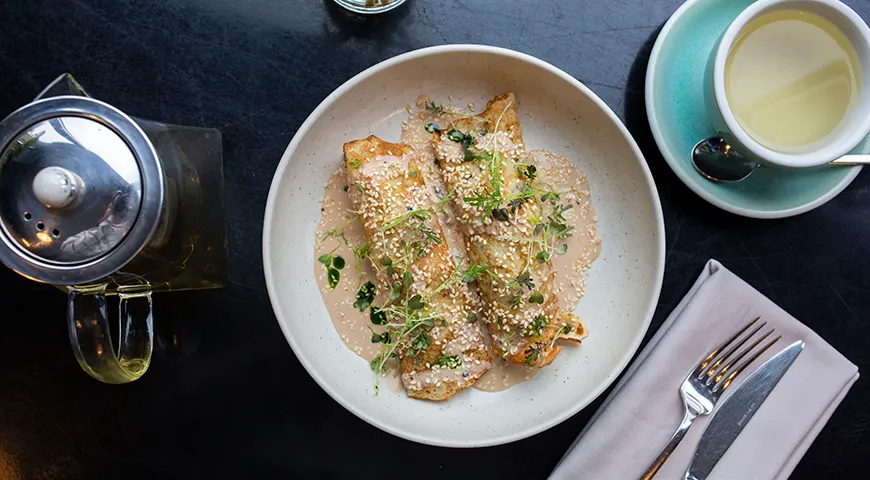

Необычные блины и начинки от шеф-поваров московских ресторанов

У каждой хозяйки есть свой проверенный рецепт блинов. Но иногда хочется разнообразия. Рецептами начинок и необычных блинов из манки, нутовой и ржаной муки делятся шеф-повара.